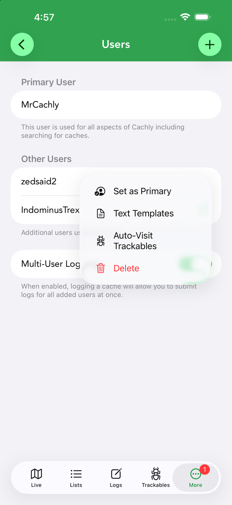
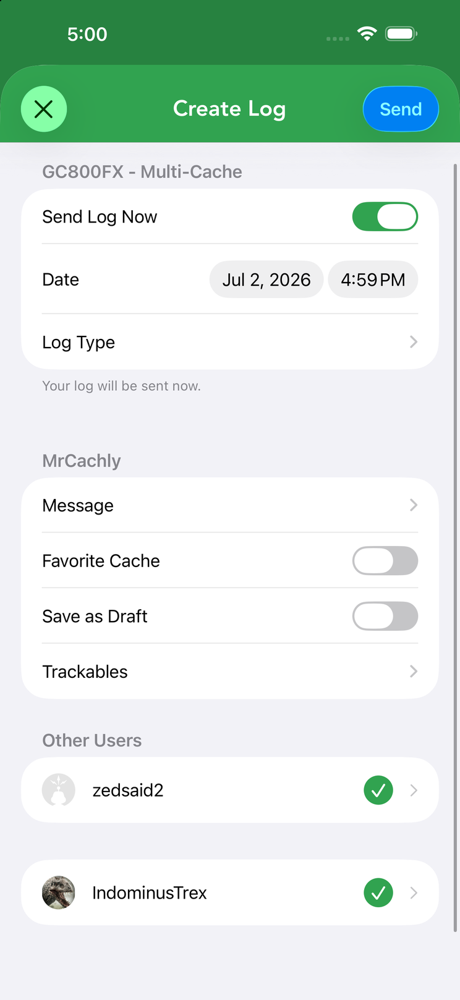
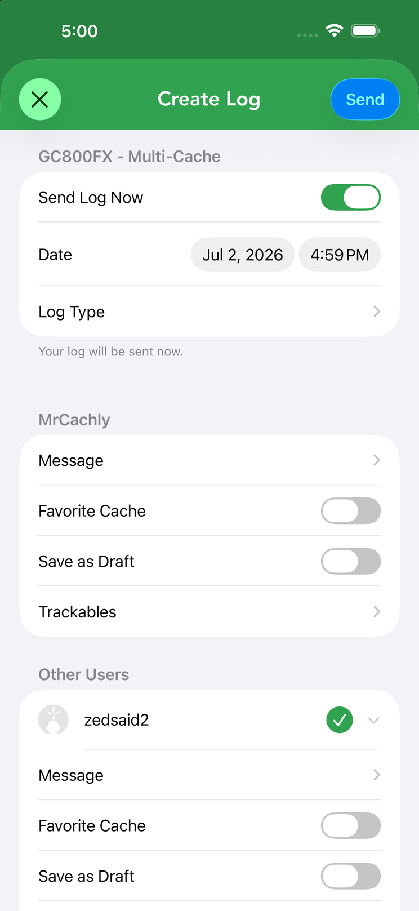

Multi-User Logging
Cache as a couple, family or team and log everyone’s find in one pass — each account with its own message, favorites and trackables. Added in Cachly 8.2 for Pro subscribers.




Setting up users
Accounts are managed in Settings › Users:
- Primary User — the account used for all of Cachly, including searching for caches.
- Other Users — additional accounts used for logging. Tap + to add one; each signs in through geocaching.com’s own authorization page, so Cachly never sees their password. Each user’s … menu offers Set as Primary, their own Text Templates, Auto-Visit Trackables, and Delete.
- Multi-User Logging toggle — when enabled, logging a cache lets you submit logs for all added users at once.
How it works
Cachly can log a single cache under multiple geocaching.com accounts at the same time — ideal for couples, families or groups who find together. With users added, the log screen gains an Other Users section where every account appears with its own controls:
- Choose who’s logging — each additional account has a checkmark beside its name; tap to include or exclude that person from this log. Your own account is always logged. Tap an account’s row to expand its options.
- Per-account details — every selected account gets its own message, Favorite Cache toggle, Save as Draft toggle and trackables, set independently. Each account’s own text templates are filled in automatically.
- Shared settings — the date, log type and (when updating) the coordinates apply to everyone at once.
Favorite points are a premium-member feature, so the toggle only appears for accounts that are geocaching.com Premium (and it’s hidden entirely on event caches, where it doesn’t apply). When you tap Send, Cachly submits a separate, real log for each selected account.